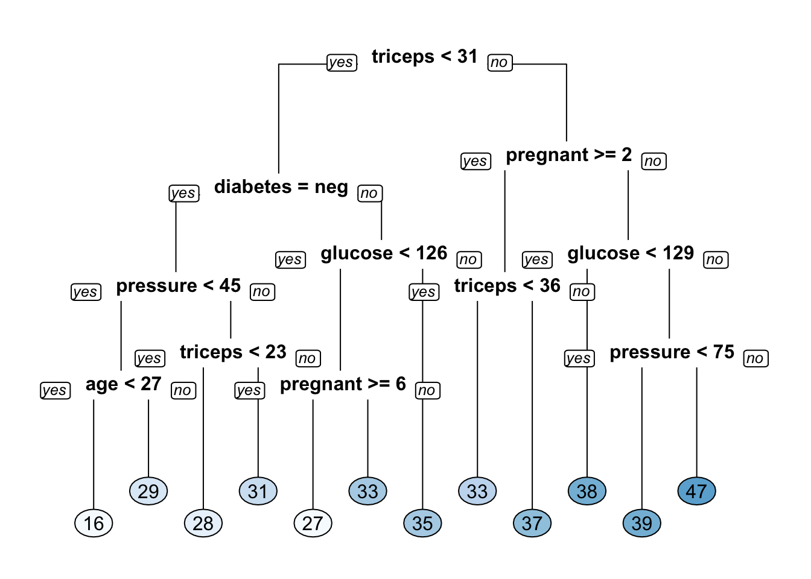
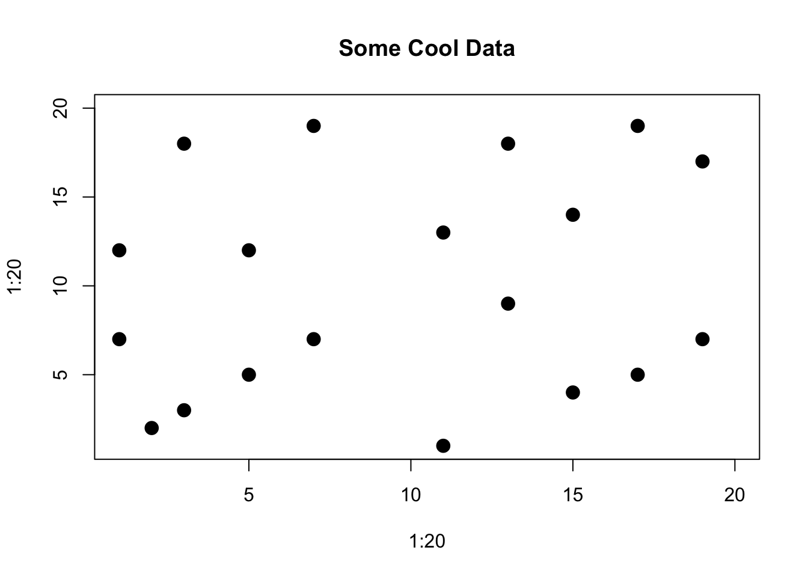
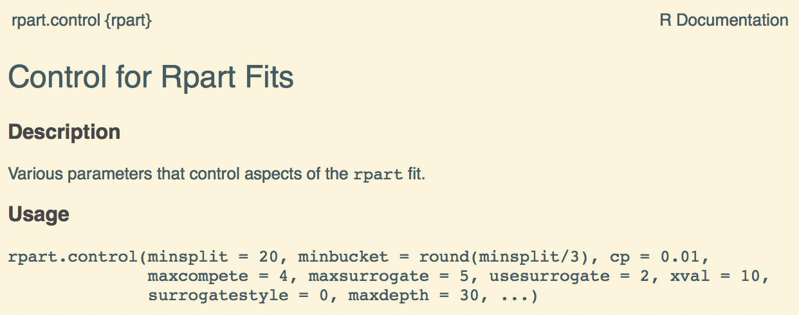
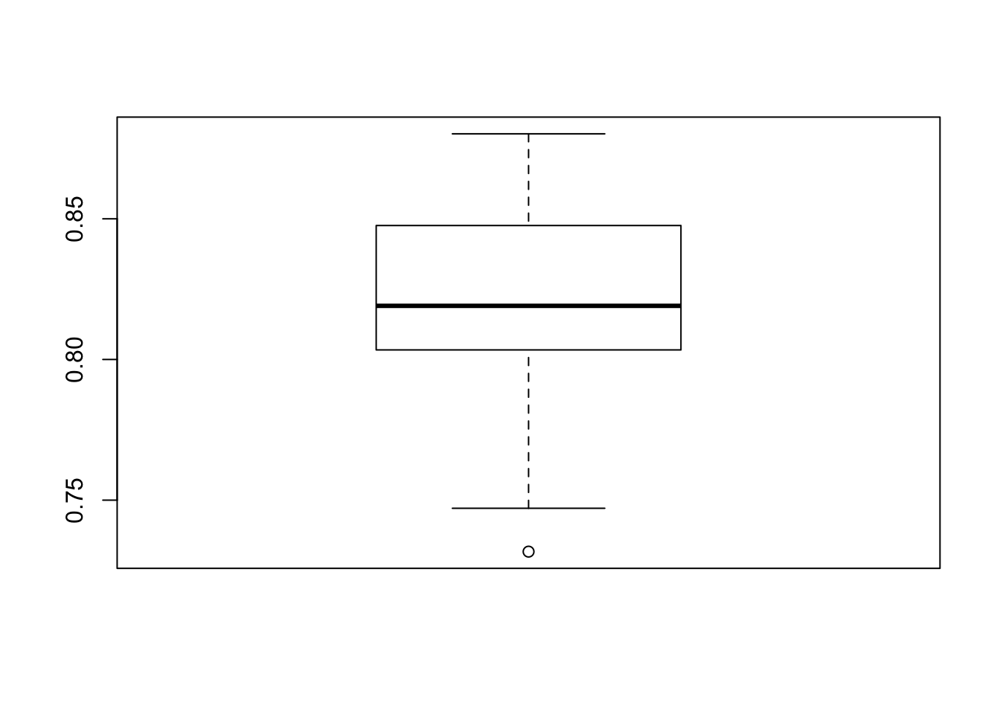

Chapter 8 Decision Trees
Tree-based methods employ a segmentation strategy that partitions the feature / predictor space into a series of decisions which has the added benefit of being easy to understand. Think of it as a flow chart for making decisions. The viewer of the chart is presented with a diagram that offers outcomes in response to (yes / no) questions (decisions) about important predictors found in the data set.
8.1 Advantages
The advantages of tree-based methods include that 1 - The model is generally easy to interpret - The path to a decision is plainly spelled out (assuming that the number of tree splits is easy enough to trace). - The method can handle numeric and categorical - One does not generally need to pre process or normalize data - Missing data is less of a big deal
Disadvantages include:
- Large trees are hard to follow - variance can be high
- Trees can be overly complex
- Overfitting can be a problem
8.2 A Classification Example
Let’s use the Pima Indians data set as it relates to predicting whether someone has diabetes. This data is provided by the mlbench package. The relevant variables are:
pregnant - Number of times pregnant
glucose - Plasma glucose concentration (glucose tolerance test)
pressure - Diastolic blood pressure (mm Hg)
triceps - Triceps skin fold thickness (mm)
insulin - 2-Hour serum insulin (mu U/ml)
mass - Body mass index (weight in kg/(height in m)\^2)
pedigree - Diabetes pedigree function
age - Age (years)
diabetes - Class variable (test for diabetes)library(mlbench)
data(PimaIndiansDiabetes)
pm <- PimaIndiansDiabetes
diabetes_mod_1 <- rpart(diabetes ~ .,pm,
method="class",cp=0.017)
rpart.plot(x = diabetes_mod_1)
That’s pretty understandable and you could show this to someone and they would probably get it without too much explanation as long as they had an awareness of the features in the data set. The “node” at the top is called the “root node” and the lines are “branches” that go either to a “terminal node” or to “leaf nodes” which involve some comparison. It’s a flow chart for decisions about whether someone has diabetes or not. Note that there is also information about what percentages of “pos” or “neg” there are in each branch.
##
## diabetes_preds neg pos
## neg 470 131
## pos 30 137# Calculate the confusion matrix for the test set
caret::confusionMatrix(diabetes_preds,
pm$diabetes,
positive="pos") ## Confusion Matrix and Statistics
##
## Reference
## Prediction neg pos
## neg 470 131
## pos 30 137
##
## Accuracy : 0.79
## 95% CI : (0.76, 0.819)
## No Information Rate : 0.651
## P-Value [Acc > NIR] : < 2e-16
##
## Kappa : 0.494
##
## Mcnemar's Test P-Value : 3.25e-15
##
## Sensitivity : 0.511
## Specificity : 0.940
## Pos Pred Value : 0.820
## Neg Pred Value : 0.782
## Prevalence : 0.349
## Detection Rate : 0.178
## Detection Prevalence : 0.217
## Balanced Accuracy : 0.726
##
## 'Positive' Class : pos
## Perhaps you noticed that in the example I included an argument called cp which corresponds to a “complexity parameter” which influences how the tree splits at various nodes. > The main role of this parameter is to save computing time by pruning off splits that are obviously not worthwhile. Essentially,the user informs the program that any split which does not improve the fit by cp will likely be pruned off by cross-validation, and that hence the program need not pursue it.
We’ll explore this in more detail momentarily. This is what is known as a “hyperparameter”.
8.3 Digging Deeper
Let’s create a training set that comprises 80% of the data with a holdout set of 20%.
set.seed(123)
percent <- .80
train_idx <- sample(1:nrow(pm),
round(percent*nrow(pm)))
train_idx[1:10]## [1] 415 463 179 526 195 118 299 229 244 14# Subset the pm data frame to training indices only
pm_train <- pm[train_idx, ]
# Exclude the training indices to create the test set
pm_test <- pm[-train_idx, ] # Train the model (to predict 'default')
pm_class_tree <- rpart(formula = diabetes ~ .,
data = pm_train,
method = "class")
# Look at the model output
pm_class_tree## n= 614
##
## node), split, n, loss, yval, (yprob)
## * denotes terminal node
##
## 1) root 614 216 neg (0.6482 0.3518)
## 2) glucose< 144 475 113 neg (0.7621 0.2379)
## 4) glucose< 104 187 17 neg (0.9091 0.0909) *
## 5) glucose>=104 288 96 neg (0.6667 0.3333)
## 10) mass< 26.9 72 7 neg (0.9028 0.0972) *
## 11) mass>=26.9 216 89 neg (0.5880 0.4120)
## 22) age< 30.5 119 34 neg (0.7143 0.2857)
## 44) pressure>=22 112 28 neg (0.7500 0.2500) *
## 45) pressure< 22 7 1 pos (0.1429 0.8571) *
## 23) age>=30.5 97 42 pos (0.4330 0.5670)
## 46) age>=56.5 9 2 neg (0.7778 0.2222) *
## 47) age< 56.5 88 35 pos (0.3977 0.6023)
## 94) pedigree< 0.201 11 3 neg (0.7273 0.2727) *
## 95) pedigree>=0.201 77 27 pos (0.3506 0.6494) *
## 3) glucose>=144 139 36 pos (0.2590 0.7410)
## 6) mass< 29.9 27 12 neg (0.5556 0.4444)
## 12) pressure>=74.5 9 1 neg (0.8889 0.1111) *
## 13) pressure< 74.5 18 7 pos (0.3889 0.6111) *
## 7) mass>=29.9 112 21 pos (0.1875 0.8125) *
8.3.1 Evaluating performance
So this is where things get interesting. We’ll use a confusion matrix to help us figure some things out about this model.
# Generate predicted classes using the model object
pm_class_pred <- predict(object = pm_class_tree,
newdata = pm_test,
type = "class")
# Calculate the confusion matrix for the test set
caret::confusionMatrix(pm_class_pred,
pm_test$diabetes,
positive="pos") ## Confusion Matrix and Statistics
##
## Reference
## Prediction neg pos
## neg 79 20
## pos 23 32
##
## Accuracy : 0.721
## 95% CI : (0.643, 0.79)
## No Information Rate : 0.662
## P-Value [Acc > NIR] : 0.0721
##
## Kappa : 0.384
##
## Mcnemar's Test P-Value : 0.7604
##
## Sensitivity : 0.615
## Specificity : 0.775
## Pos Pred Value : 0.582
## Neg Pred Value : 0.798
## Prevalence : 0.338
## Detection Rate : 0.208
## Detection Prevalence : 0.357
## Balanced Accuracy : 0.695
##
## 'Positive' Class : pos
## We can also look at the Area Under the ROC Curve.
library(Metrics)
dt_pred <- predict(pm_class_tree,
newdata = pm_test, type="prob")
converted <- ifelse(pm_test$diabetes == "pos",1,0)
aucval <- Metrics::auc(actual = converted,
predicted = dt_pred[,2])
aucval## [1] 0.7398.3.2 Tree Splitting
The resulting tree can be thought of as an upside down tree with the root at the top. The “trunk” proceeds downward and splits into subsets based on some decision (hence the word “decision” in the title). When classifying data the idea is to segment or partition data into groups/regions where each group contains or represents a single class (“yes/no”, “positive/negative”).
These groups or regions would represent a “pure” region. This is not always possible so a best effort is made. These regions are separated by decision boundaries which are used to make decisions. We’ll plot some example data to illustrate the case.



8.4 Gini Index
So we have to find a way to make the decisions such that the resulting regions are as pure as possible. This could be measuring the degree of impurity or purity - so we are either maximizing purity or minimizing impurity The so called “Gini index”" gives us the degree or measure of impurity.
The lower the Gini index, the lower the degree of impurity (this higher purity). The higher the Gini index the higher the degree of impurity (this lower purity). The decision tree will select the split that minimizes or lowers the Gini index. There are other measures or indices that can be used such as the “information” measure.
Let’s train two models that use a different splitting criterion (“gini” and “information”) and then use the test set to choose a “best” model. To do this you’ll use the parms argument of the rpart function. This argument takes a named list that contains values of different parameters to influence how the model is trained. Finally, to assess the models we’ll use the ce function from the Metrics package to show the proportion of elements in actual that are not equal to the corresponding element in predicted.
# Train a gini-based model
pm_gini_mod <- rpart(formula = diabetes ~ .,
data = pm_train,
method = "class",
parms = list(split = "gini"))
# Train an information-based model
pm_info_mod <- rpart(formula = diabetes ~ .,
data = pm_train,
method = "class",
parms = list(split = "information"))
# Create some predictions
gini_pred <- predict(object = pm_gini_mod,
newdata = pm_test,
type = "class")
# Generate predictions on the validation set using the information model
info_pred <- predict(object = pm_info_mod,
newdata = pm_test,
type = "class")
# Compare classification error
Metrics::ce(actual = pm_test$diabetes,
predicted = gini_pred)## [1] 0.279## [1] 0.268.5 Regression Trees
Predicting numeric outcomes can also be of interest. Given some patient characteristics relative to a disease, we might want to predict a viral load quantity. A gambler might want to predict a final score for a team. Unlike, classification problems, we are looking at estimating a numeric outcome. R has a built in function for this called “lm” which can be used but we can also use Trees to do this since, after, all, it does some nice things for us like not having to worry about normalizing data (not that that is hard) or the mixture of quantitative and categorical data.
8.5.1 Performance Measure
Since we are predicting a numeric outcome we would like to come up with a metric to help us figure out if the model we have is good or not. With classification situations we can employ confusion matrices and ROC curves. Here we will use something more simplistic but effective - Root Mean Square Error. The formula looks like the following where P represents a vector of predictions and O represents a vector of the observed (true) values.
\[ RMSE = \sqrt\frac{\sum_i^n(P_i-O_i)^2}{n} \]
We could even write our own function for this although the Metrics package has a function called rmse to do this. Let’s build a classification tree model on the Pima Indians data to predict the body mass of a participant.
# Train the model
mass_pima_mod <- rpart(formula = mass ~ .,
data = pm_train,
method = "anova")
# Look at the model output
print(mass_pima_mod)## n= 614
##
## node), split, n, deviance, yval
## * denotes terminal node
##
## 1) root 614 36900 32.0
## 2) triceps< 30.5 422 22000 29.7
## 4) diabetes=neg 293 13600 28.3
## 8) pressure< 45 20 2690 21.2
## 16) age< 27 12 1620 16.2 *
## 17) age>=27 8 309 28.7 *
## 9) pressure>=45 273 9850 28.8
## 18) triceps< 22.5 190 6890 27.8 *
## 19) triceps>=22.5 83 2420 30.9 *
## 5) diabetes=pos 129 6240 33.1
## 10) glucose< 126 47 3040 30.6
## 20) pregnant>=5.5 19 1700 26.6 *
## 21) pregnant< 5.5 28 840 33.3 *
## 11) glucose>=126 82 2730 34.6 *
## 3) triceps>=30.5 192 8250 36.9
## 6) pregnant>=1.5 128 4020 35.1
## 12) triceps< 35.5 64 2190 33.1 *
## 13) triceps>=35.5 64 1310 37.1 *
## 7) pregnant< 1.5 64 3070 40.3
## 14) glucose< 128 38 1010 38.0 *
## 15) glucose>=128 26 1570 43.7
## 30) pressure< 75 10 123 38.7 *
## 31) pressure>=75 16 1030 46.8 *
Let’s compute the RMSE for this model.
# Generate predictions on a test set
pred <- predict(object = mass_pima_mod, # model object
newdata = pm_test) # test dataset
# Compute the RMSE
Metrics::rmse(actual = pm_test$mass,
predicted = pred)## [1] 6.63Is this Good ? Bad ? Okay ? We don’t know. We’ll need to do some things like Cross Validation. And then there are additional arguments to the rpart function that we could use to influence how the model does its job. These are referred to as “hyperparamters”.
8.6 Parameters vs Hyperparameters
Model parameters are things that are generated as part of the modeling process. These might be things like slope and intercept from a linear model or, in the case of an rpart model, the number of splits in the final tree or the total number of leaves.
Hyper parameters (sometimes called metaparameters) represent information that is supplied in the form of an argument prior the call to the method to generate results. These parameters might not be something one can intelligently set without some experimentation.
Of course, most modeling functions one would call in R have default values for various arguments but this does not mean that the defaults are appropriate for all cases. To see the hyper parameters of the rpart function, check the help page for rpart.control.

Tuning the hyperparameters for rpart would involve adjusting the following hyper parameters or using some post processing function to refine the model relative to these parameters:
- cp which is the complexity parameter (default is .01) - smaller values means more complexity
- minsplit the minimum number of observations that must exist in a node before a split is attempted (default is 20)
- maxdepth maximum number of nodes between a final node and root node
There are other hyper parameters but we can start with these. The rpart.control function will do something called cross validation which involves repeatedly running the rpart some number of times (10 by default) while internally specifying different values for the above mentioned hyper parameters.
In effect, it is doing some work for you so you don’t have to. At the end of the run it will produce a table for inspection. The results of this table can then be used to “prune” the tree model to get a “better” tree - one that performs better than an “un pruned” tree. Let’s look at the pima mass model:

## CP nsplit rel error xerror xstd
## 1 0.1815 0 1.000 1.002 0.0938
## 2 0.0570 1 0.818 0.845 0.0809
## 3 0.0315 2 0.761 0.807 0.0795
## 4 0.0290 3 0.730 0.790 0.0794
## 5 0.0206 4 0.701 0.772 0.0763
## 6 0.0146 5 0.680 0.780 0.0781
## 7 0.0141 6 0.666 0.801 0.0773
## 8 0.0134 7 0.652 0.793 0.0762
## 9 0.0132 8 0.638 0.793 0.0771
## 10 0.0111 10 0.612 0.802 0.0772
## 11 0.0100 11 0.601 0.804 0.0730We want to pick the value of CP from the table that corresponds to the minimum xerror value. This can also be deduced from the plot but let’s work with the table:
We’ll use the CP value associated with the minimum error which in this case turns out to be 0.01. This is now passed to the prune function.
mass_pima_mod_opt <- prune(mass_pima_mod,
cp = cpt_val)
# Plot the optimized model
rpart.plot(mass_pima_mod_opt, yesno = 2, type = 0, extra = 0)
Does this optimized model perform any better ? Not really, because the optimal CP value turned out to be 0.01 which is actually the same as the default.
# Generate predictions on a test set
pred <- predict(object = mass_pima_mod_opt, # model object
newdata = pm_test) # test dataset
# Compute the RMSE
Metrics::rmse(actual = pm_test$mass,
predicted = pred)## [1] 6.798.7 Grid Searching
We might want to review several different models that correspond to various hyperparamter sets. Our goal is to find the best performing model based on a systematic approach that allows us to assess each model in a fair way. There are functions that can help us build a “grid” of hyperparameter values that can then “feed” the function arguments. So we train models on a combination of these values and compare them using the RMSE for regression or ROC / Confusion Matrix for classification setups.
Setting up the grid involves a manual process (although as we will eventually see) the caret package can help automate this for us. Knowing about the valid values for a hyperparameter is critical so some experimentation is important. The following process sets up a data frame of two columns each of which corresponds to a hyperparamter of the rpart function. The intent here is to call rpart a number of times using each row of the below data frame to supply the values for the respective arguments in rpart.
mysplits <- seq(1, 35, 5)
mydepths <- seq(5,40, 10)
my_cool_grid <- expand.grid(minsplit = mysplits,
maxdepth = mydepths)
head(my_cool_grid)## minsplit maxdepth
## 1 1 5
## 2 6 5
## 3 11 5
## 4 16 5
## 5 21 5
## 6 26 5We’ll generate models, predictions, and RMSE values and stash them for later review. Once again, we’ll be predicting the mass variable in the Pima Indians data frame.
do_grid_search <- function(minsplit,maxdepth) {
# Setup some book keeping structures
mods <- list()
preds <- list()
myrmse <- vector()
mygrid <- expand.grid(minsplit=minsplit,
maxdepth=maxdepth)
for (ii in 1:nrow(mygrid)) {
minsplit <- mygrid[ii,]$minsplit
maxdepth <- mygrid[ii,]$maxdepth
# Build the Model
mods[[ii]] <- rpart(mass ~ .,
data = pm_train,
method = "anova",
minsplit = minsplit,
maxdepth = maxdepth)
# Now predict against the test data
preds[[ii]] <- predict(mods[[ii]],
newdata = pm_test)
# Get RMSE
myrmse[ii] <- Metrics::rmse(actual = pm_test$mass,
predicted = preds[[ii]])
}
# Find the model that has the lowest rmse
idx <- which.min(myrmse)
# Get the control parameters for the best model
optimal_model <- mods[[idx]]
rmseval <- myrmse[idx]
return(list(optimal_model=optimal_model,optim_rmse=rmseval))
}Now run the function and get the parameters corresponding to the optimal model.
## [1] 6.85## $minsplit
## [1] 2
##
## $minbucket
## [1] 1
##
## $cp
## [1] 0.01
##
## $maxcompete
## [1] 4
##
## $maxsurrogate
## [1] 5
##
## $usesurrogate
## [1] 2
##
## $surrogatestyle
## [1] 0
##
## $maxdepth
## [1] 4
##
## $xval
## [1] 108.8 Bagged Trees
Now we look at bagged trees which involves looking at many trees in aggregate - this is an ensemble method. It helps to reduce the variance associated with a single decision tree which can be highly sensitive to changes in data. The term bagging refers to “bootstrap aggregation”. To review, the Decision Tree process can be represented like this:

The bootstrap method of sampling will resample the training data some number of times (with replacement) and retrain a number of models on the resampled data to average out the error. This looks something like:
- The input data set is resampled with replacement some number of times (e.g. 10,50, 100)
- The resampled data is usually a subset of the data which leaves some portion of the data available to use a mini test set for prediction (“out of bag data”")
- Get the RMSE from the prediction
- Average out the RMSE
So you get a lot of different trees whose performance can be averaged over boostrapped data sets which might include observations several times or not at all. This should result in less variance. A reason NOT to use bagged trees involves the idea that a collection of trees is not nearly as easy to look at as a single decision tree. We can actually write our own version of bagged trees using a for loop. Sort of like what we did above. First, let’s get our test / train pair for the Pima Indians data.
set.seed(123)
percent <- .80
train_idx <- sample(1:nrow(pm),
round(percent*nrow(pm)))
train_idx[1:10]## [1] 415 463 179 526 195 118 299 229 244 14# Subset the pm data frame to training indices only
pm_train <- pm[train_idx, ]
# Exclude the training indices to create the test set
pm_test <- pm[-train_idx, ] Next, well create 50 different trees based on 50 bootstrapped samples of the training data. We will sample WITH replacement. This means that some of the rows from the data will be repeated and some will be left out all together. We can figure out what rows were not included and use them to create a test set referred to as “out of bag” samples.
training_boot_idx <- sample(1:nrow(pm),replace=TRUE)
test_boot_idx <- !(1:32 %in% training_boot_idx)Let’s start looping
library(Metrics)
modl <- list()
predl <- list()
aucval <- vector()
acc <- vector()
number_of_boostraps <- 50
for (ii in 1:number_of_boostraps) {
training_boot_idx <- sample(1:nrow(pm),replace=TRUE)
test_boot_idx <- !(1:32 %in% training_boot_idx)
modl[[ii]] <- rpart(diabetes ~ .,
data = pm[training_boot_idx,],
method = "class"
)
# This list will contain / hold the models build on the bootstrap
predl[[ii]] <- predict(modl[[ii]],
newdata=pm[test_boot_idx,],
type="prob")
converted <- ifelse(pm[test_boot_idx,]$diabetes == "pos",1,0)
# Let's create an estimate of the AUC
aucval[ii] <- Metrics::auc(actual = converted,
predicted = predl[[ii]][,2])
}Now check all of the accuracy estimates and then average them. Remember this is supposed to help us to better estimate the out of sample error.

## [1] 0.822Now we’ll compare this to the function called “bagging” from the ipred package which does bagged trees directly.
library(ipred)
bagged_pm <- bagging(diabetes ~ .,
data = pm_train, coob = TRUE)
bagged_pred <- predict(bagged_pm,
newdata = pm_test, type="prob")converted <- ifelse(pm_test$diabetes == "pos",1,0)
aucval <- Metrics::auc(actual = converted,
predicted = bagged_pred[,2])
aucval## [1] 0.831This is better than the 0.7804305 we got when using a single Decision tree. Single decision trees are sometimes called “weak learners” because
8.9 Random Forests
In bagging, all features are used when considering if and when to split. However, with the Random Forest approach, a subset of features are selected at random at each split in a decision tree. You could think of random forests as being an extension of Bagged Trees. Typically they are also an improvement. As with other tree methods, we don’t have to worry a lot about preprocessing the data although we could if we wanted to. Basically, one of the main advantages of tree methods is that it tolerates a combination of data types on different scales which makes it good as a “go to” method for beginners.
Random forests will sample some number of features when considering a split. This can be influenced by a hyperparameter called mtry which is limited to the number of features in the data set.
# Train a Random Forest
set.seed(1) # for reproducibility
pm_rf_model <- randomForest(formula = diabetes ~ .,
data = pm_train)
# Print the model output
print(pm_rf_model)##
## Call:
## randomForest(formula = diabetes ~ ., data = pm_train)
## Type of random forest: classification
## Number of trees: 500
## No. of variables tried at each split: 2
##
## OOB estimate of error rate: 25.6%
## Confusion matrix:
## neg pos class.error
## neg 336 62 0.156
## pos 95 121 0.440Let’s look at the out of bag error matrix
## OOB neg pos
## [1,] 0.327 0.282 0.405
## [2,] 0.319 0.253 0.426
## [3,] 0.298 0.213 0.447
## [4,] 0.286 0.201 0.438
## [5,] 0.299 0.214 0.448
## [6,] 0.293 0.193 0.473
Do some predictions with this model.
rf_pred <- predict(pm_rf_model,
newdata = pm_test, type="prob")
converted <- ifelse(pm_test$diabetes == "pos",1,0)
aucval <- Metrics::auc(actual = converted,
predicted = rf_pred[,2])
aucval## [1] 0.845A slight improvement over the bagged trees.
8.10 Boosted Trees
We’ll finish off this section with a discussion on boosted trees which represents an extension to random forests. Here is how we have been progressing thus far:
- Single Decision Tree
- Bagged Decision Trees (Aggregated Trees using all features)
- Random Forests (Many Trees using a number of of sampled features)
Methods 2 and 3 will use bootstrap sampling on the input data which means there will be sampling with replacement to generate a training set. After a tree is built then it will be applied to the OOB (Out Of Band) data left over from the bootstrap sample. This will then be used in the computation of an average.
With boosting, we don’t try to keep up with the idea of reducing the variance emerging from a number of individual trees (aka “learners”). Nor do we consider each tree as being independent and later try to integrate it into an average tree. With boosting we create a sequence of trees such that any subsequent tree represents an improvement on the previous tree(s) thus there is some dependency in the interest of improvement.
The process attempts to learn from previous “mistakes” in the creation of down stream trees. Boosting looks at the residuals from a tree and pays attention to any problematic observations when creating a subsequent tree. Here is an example. We’ll need to do a bit more prep on the data though prior to use:
We had to turn the “pos” / “neg” values into, respectively, 1 and 0. The gbm function requires this for classification problems.
library(gbm)
pm_boost <- gbm(diabetes ~ . ,
distribution="bernoulli",
data = prep_pm_train,n.trees=1000)
summary(pm_boost)
## var rel.inf
## glucose glucose 24.38
## mass mass 16.15
## pedigree pedigree 14.77
## age age 12.97
## insulin insulin 9.67
## pressure pressure 8.55
## pregnant pregnant 7.54
## triceps triceps 5.96boost_pred <- predict(pm_boost,
newdata = pm_test,
type="response",
n.trees=50)
converted <- ifelse(pm_test$diabetes == "pos",1,0)
aucval <- Metrics::auc(actual = converted,
predicted = boost_pred)
aucval## [1] 0.838Of course, we can use the caret package to knit these altogether into one framework that dispenses wit the need to understand the details of each method although it is important for you to see examples of standalone functions since 1) it can help your understanding of the method and 2) in languages such as Python there is no equivalent to caret.
8.11 Using caret
We looked at individual methods including rpart, bagging, random forests, and boosted trees. Each of these had its own approach and hyperparameters. With caret we can do basically plugin methods.
control <- trainControl(method="cv",
number=10,
summaryFunction = twoClassSummary,
classProbs = TRUE,
savePredictions = TRUE,
verboseIter = FALSE)
rpart_caret <- train(diabetes ~ .,
data = pm_test,
method = "rpart",
metric = "ROC",
trControl = control)
rpart_caret## CART
##
## 154 samples
## 8 predictor
## 2 classes: 'neg', 'pos'
##
## No pre-processing
## Resampling: Cross-Validated (10 fold)
## Summary of sample sizes: 139, 138, 139, 139, 139, 137, ...
## Resampling results across tuning parameters:
##
## cp ROC Sens Spec
## 0.0288 0.660 0.803 0.417
## 0.0481 0.664 0.803 0.460
## 0.1731 0.501 0.852 0.160
##
## ROC was used to select the optimal model using the largest value.
## The final value used for the model was cp = 0.0481.Next, we try out the bagging approach
bagging_caret <- train(diabetes ~ .,
data = pm_test,
method = "treebag",
metric = "ROC",
trControl = control)
bagging_caret## Bagged CART
##
## 154 samples
## 8 predictor
## 2 classes: 'neg', 'pos'
##
## No pre-processing
## Resampling: Cross-Validated (10 fold)
## Summary of sample sizes: 139, 138, 137, 138, 139, 139, ...
## Resampling results:
##
## ROC Sens Spec
## 0.781 0.834 0.557Next we try out the random forest function
rf_caret <- train(diabetes ~ .,
data = pm_test,
method = "rf",
metric = "ROC",
trControl = control)
rf_caret## Random Forest
##
## 154 samples
## 8 predictor
## 2 classes: 'neg', 'pos'
##
## No pre-processing
## Resampling: Cross-Validated (10 fold)
## Summary of sample sizes: 138, 139, 138, 139, 138, 139, ...
## Resampling results across tuning parameters:
##
## mtry ROC Sens Spec
## 2 0.814 0.864 0.550
## 5 0.810 0.853 0.553
## 8 0.799 0.853 0.533
##
## ROC was used to select the optimal model using the largest value.
## The final value used for the model was mtry = 2.And finally, the boosted approach:
boosted_caret <- train(diabetes ~ .,
data = pm_test,
method = "gbm",
metric = "ROC",
verbose = FALSE,
tuneLength = 10,
trControl = control)Let’s look at how they all performed:
## Results for Rpart## cp ROC Sens Spec ROCSD SensSD SpecSD
## 1 0.0288 0.66 0.803 0.417 0.133 0.0955 0.221## Results for Bagging## parameter ROC Sens Spec ROCSD SensSD SpecSD
## 1 none 0.781 0.834 0.557 0.0976 0.0788 0.21## Results for Random Forest## mtry ROC Sens Spec ROCSD SensSD SpecSD
## 1 2 0.814 0.864 0.55 0.146 0.104 0.239## Results for Boosted Trees## shrinkage interaction.depth n.minobsinnode n.trees ROC Sens Spec ROCSD
## 1 0.1 1 10 50 0.799 0.845 0.533 0.107
## SensSD SpecSD
## 1 0.11 0.259